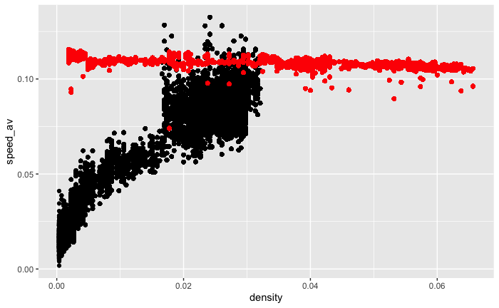
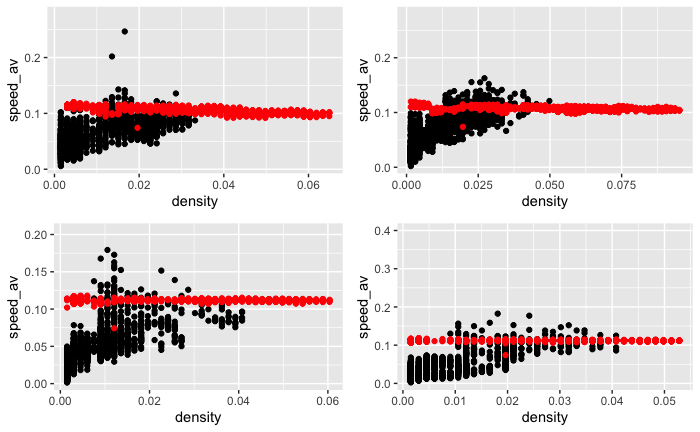
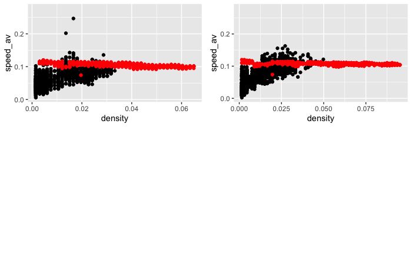

# average speed per frame
gcs_speed1 = gcs_sf_s |>
dplyr::group_by(sec) |>
dplyr::summarise(n = dplyr::n())
gcs_speed2 = gcs_sf_s |>
dplyr::mutate(dist = as.numeric(dist)) |>
dplyr::filter(dist != 0) |> # filter our starting points (ie the rows that have dist = 0)
dplyr::group_by(sec) |>
dplyr::summarise(dist_sum = sum(dist)) |> # summing up the total distance of agents in a group
sf::st_drop_geometry() # drop geometry column
gcs_speed = dplyr::left_join(gcs_speed1, gcs_speed2) |>
dplyr::mutate(speed_av = dist_sum/n) # average speed (see formula at the start of the notebook)
gcs_speed_joined = dplyr::left_join(gcs_speed, gcs_d)5 Fundamental diagrams
The aim of this chapter is to plot fundamental diagrams (speed ~ density) and compare them between JPS and GCS.
A fundamental diagram denotes to the linear relationship between average speed (or velocity) and density (or flow) of an agent, usually vehicles or pedestrians.
Density = N/Area
Speed(av) = sum(agent distance per frame)/N
N -> number of agents
Area -> an area in which agents are counted
Note 1: GCS has distance/speed per frame data. You can find out how it was acquired following this R script: https://github.com/GretaTimaite/pedestrian_simulation/blob/main/gcs_speed.R
Note 2: JPS does not have this information, so it will be done in this chapter.
5.1 1.1 Global (GCS)
This builds on the previous chapter on density, hence density part will be skipped. Instead, let’s move to finding out average speed per second.
5.2 Plotting
gcs_fd = ggplot2::ggplot(data = gcs_speed_joined,
ggplot2::aes(x = density,
y = speed_av))+
ggplot2::geom_point()5.3 1.2 Divided (GCS)
To find out how density has been measured, see “Density” chapter.
# first create a list to store our new datasets
gcs_fd_div = list()
for (i in 1:lengths(gcs_div_sf)){
gcs_fd_div[[i]] = gcs_sf_s[gcs_div_sf[i,], op = sf::st_intersects]
}# a list with dataframes (denoting to different polygons) containing average speed of agents per frame
gcs_speed_div = list()
for (i in 1:lengths(gcs_div_sf)){
gcs_speed_div[[i]] = gcs_fd_div[[i]] |>
dplyr::mutate(dist = as.numeric(dist)) |> # turn character into numeric
dplyr::filter(dist != 0) |> # filter out agent starting points (eg distance = 0)
dplyr::group_by(sec) |>
dplyr::summarise(n = dplyr::n(), # number of agents per frame
dist_sum = sum(dist), # total sum
speed_av = dist_sum / n) # average speed
}# join dataframes in `gcs_speed_div` and `gcs_speed_div` lists accordingly (will help when plotting)
gcs_fd_joined = list()
for (i in 1:length(gcs_fd_div)){
gcs_fd_joined[[i]] = dplyr::left_join(gcs_speed_div[[i]] |> sf::st_drop_geometry(),
gcs_d_div[[i]] |> sf::st_drop_geometry())
}5.3.1 Plotting
gcs_div_plots = list()
for (i in 1:length(gcs_fd_joined)){
gcs_div_plots[[i]] = ggplot2::ggplot(gcs_fd_joined[[i]]) +
ggplot2::aes(x = density,
y = speed_av) +
ggplot2::geom_point()
# print(plots_den)
}
gridExtra::grid.arrange(gcs_div_plots[[1]], gcs_div_plots[[2]], gcs_div_plots[[3]], gcs_div_plots[[4]], layout_matrix = rbind(c(1,2),c(3,4)))5.4 1.3 Selected (GCS)
# first create a list to store our new datasets
gcs_fd_sel = list()
for (i in 1:length(zones)){
gcs_fd_sel[[i]] = gcs_sf_s[gcs_div_sf[i,], op = sf::st_intersects]
}# a list with dataframes (denoting to different polygons) containing average speed of agents per frame
gcs_speed_sel = list()
for (i in 1:lengths(zones)){
jps_speed_sel[[i]] = gcs_fd_sel[[i]] |>
dplyr::mutate(dist = as.numeric(dist)) |> # turn character into numeric
dplyr::filter(dist != 0) |> # filter out agent starting points (eg distance = 0)
dplyr::group_by(sec) |>
dplyr::summarise(n = dplyr::n(), # number of agents per frame
dist_sum = sum(dist), # total sum
speed_av = dist_sum / n) # average speed
}# join lists accordingly (will help when plotting)
gcs_fd_joined = list()
for (i in 1:length(zones)){
gcs_fd_joined[[i]] = dplyr::left_join(gcs_speed_div[[i]] |> sf::st_drop_geometry(),
gcs_d_div[[i]] |> sf::st_drop_geometry())
}5.4.1 Plotting
gcs_sel_plots = list()
for (i in 1:length(gcs_fd_joined)){
gcs_sel_plots[[i]] = ggplot2::ggplot(gcs_fd_joined[[i]]) +
ggplot2::aes(x = density,
y = speed_av) +
ggplot2::geom_point()
# print(plots_den)
}
gridExtra::grid.arrange(gcs_sel_plots[[1]], gcs_sel_plots[[2]], layout_matrix = rbind(c(1,2)))5.5 2.1 Global (JPS)
We don’t have dist column in our traj1 dataframe. Thus, we will need to derive it. We will measure speed per secon.
This builds on the previous chapter on density, hence density part will be skipped. Instead, let’s move to finding out average speed per second.
# average speed per frame
jps_speed1 = jps_dist_df |>
dplyr::mutate(sec = FR / 8) |>
dplyr::group_by(sec) |>
dplyr::summarise(n = dplyr::n(),
FR = FR,
ID = ID)
jps_speed2 = jps_dist_df |>
sf::st_drop_geometry() |> # drop geometry column
dplyr::mutate(sec = FR / 8) |>
dplyr::mutate(dist = as.numeric(dist)) |>
dplyr::filter(dist != 0) |> # filter our starting points (ie the rows that have dist = 0)
dplyr::group_by(sec) |>
dplyr::summarise(dist_sum = sum(dist),
FR = FR,
ID = ID) # summing up the total distance of agents in a group
jps_speed = dplyr::left_join(jps_speed1, jps_speed2) |>
dplyr::mutate(speed_av = dist_sum/n) # average speed (see formula at the start of the notebook)
jps_d_group_sec = jps_d |>
dplyr::group_by(sec) |>
dplyr::summarise(n = dplyr::n(),
density = density)
jps_speed_joined = dplyr::left_join(jps_speed, jps_d_group_sec)5.6 Plotting
jps_fd = ggplot2::ggplot(data = jps_speed_joined,
ggplot2::aes(x = density,
y = speed_av))+
ggplot2::geom_point()5.7 Divided (JPS)
To find out how density has been measured, see “Density” chapter.
# first create a list to store our new datasets
# turn df into an sf object
jps_dist_sf = jps_dist_df |>
sf::st_as_sf(coords = c("x_coord", "y_coord"))
jps_fd_div = list()
for (i in 1:lengths(gcs_div_sf)){
jps_fd_div[[i]] = jps_dist_sf[gcs_div_sf[i,], op = sf::st_intersects]
}# a list with dataframes (denoting to different polygons) containing average speed of agents per frame
jps_speed_div = list()
for (i in 1:lengths(gcs_div_sf)){
jps_speed_div[[i]] = jps_fd_div[[i]] |>
dplyr::mutate(sec = FR / 8) |>
dplyr::mutate(dist = as.numeric(dist)) |> # turn character into numeric
dplyr::filter(dist != 0) |> # filter out agent starting points (eg distance = 0)
dplyr::group_by(sec) |>
dplyr::summarise(n = dplyr::n(), # number of agents per frame
dist_sum = sum(dist), # total sum
speed_av = dist_sum / n) # average speed
}# join dataframes in `gcs_speed_div` and `gcs_speed_div` lists accordingly (will help when plotting)
jps_fd_joined = list()
for (i in 1:length(jps_fd_div)){
jps_fd_joined[[i]] = dplyr::left_join(jps_speed_div[[i]] |> sf::st_drop_geometry(),
jps_d_div[[i]] |> sf::st_drop_geometry())
}5.7.1 Plotting
jps_div_plots = list()
for (i in 1:length(jps_fd_joined)){
jps_div_plots[[i]] = ggplot2::ggplot(jps_fd_joined[[i]]) +
ggplot2::aes(x = density,
y = speed_av) +
ggplot2::geom_point()
# print(plots_den)
}
gridExtra::grid.arrange(jps_div_plots[[1]], jps_div_plots[[2]], jps_div_plots[[3]], jps_div_plots[[4]], layout_matrix = rbind(c(1,2),c(3,4)))5.8 Selected (JPS)
# first create a list to store our new datasets
jps_fd_sel = list()
for (i in 1:length(zones)){
jps_fd_sel[[i]] = jps_dist_sf[zones[i], op = sf::st_intersects]
}# a list with dataframes (denoting to different polygons) containing average speed of agents per frame
jps_speed_sel = list()
for (i in 1:length(zones)){
jps_speed_sel[[i]] = jps_fd_sel[[i]] |>
dplyr::mutate(sec = FR / 8) |>
dplyr::mutate(dist = as.numeric(dist)) |> # turn character into numeric
dplyr::filter(dist != 0) |> # filter out agent starting points (eg distance = 0)
dplyr::group_by(sec) |>
dplyr::summarise(n = dplyr::n(), # number of agents per frame
dist_sum = sum(dist), # total sum
speed_av = dist_sum / n) # average speed
}# join lists accordingly (will help when plotting)
jps_fd_joined = list()
for (i in 1:length(zones)){
jps_fd_joined[[i]] = dplyr::left_join(jps_speed_sel[[i]] |> sf::st_drop_geometry(),
jps_d_sel[[i]] |> sf::st_drop_geometry())
}5.8.1 Plotting
jps_sel_plots = list()
for (i in 1:length(jps_fd_joined)){
jps_sel_plots[[i]] = ggplot2::ggplot(jps_fd_joined[[i]]) +
ggplot2::aes(x = density,
y = speed_av) +
ggplot2::geom_point()
# print(plots_den)
}
gridExtra::grid.arrange(jps_sel_plots[[1]], jps_sel_plots[[2]], layout_matrix = rbind(c(1,2)))6 Comparison
6.1 Global
#fd_comp = gcs_fd +
ggplot2::geom_point(data = jps_speed_joined,
color = "red")
## Divided
fd_div_comp = list()
for (i in 1:length(gcs_fd_div)) {
fd_div_comp[[i]] = gcs_div_plots[[i]] +
ggplot2::geom_point(data = jps_fd_joined[[i]],
color = "red")
}
gridExtra::grid.arrange(fd_div_comp[[1]], fd_div_comp[[2]], fd_div_comp[[3]], fd_div_comp[[4]], layout_matrix = rbind(c(1,2),c(3,4)))
6.2 Selected
gcs_fd_div_plots+
ggplot2::geom_point(data = jps_fd_joined,
color = "red")
fd_sel_comp = list()
for (i in 1:length(gcs_fd_div_plots)) {
fd_sel_comp[[i]] = gcs_fd_div_plots[[i]] +
ggplot2::geom_point(data = jps_fd_joined[[i]],
color = "red")
}
gridExtra::grid.arrange(fd_sel_comp[[1]], fd_sel_comp[[2]], layout_matrix = rbind(c(1,2),c(3,4)))
7 JPS Speed
# get data
jps = read.table("/Users/gretatimaite/Desktop/pedestrian_simulation/final_results/8_frame/1/traj.txt",
col.names = c("ID", "FR", "X", "Y", "Z", "A", "B", "ANGLE", "COLOR"))
jps_sf = jps |>
sf::st_as_sf(coords = c("X", "Y"))
## now we'll create a list of dataframes for each agent
# first, let's find out the number of unique agents as this will be the number of dataframes in the list
unique_ids = jps_sf |> dplyr::pull(ID) |> unique() |> sort()
# create an empty list to store DFs
agent_list = list()
# create a loop
for (i in 1:length(unique_ids)){
agent_list[[i]] = jps_sf |> # iterate through frames_sf
dplyr::filter(ID %in% unique_ids[i]) # filter frames_sf by a unique ID
}
## sanity check
identical(agent_list[[30]],
jps_sf |> dplyr::filter(ID %in% unique_ids[30]))
# >TRUE
## Now we will create a matrix of distances for each frame of a given agent.
# It will be used later in a function to extract the distances sequentially (from frame 1 to frame 2 to frame 3, etc)
distance_matrix_list = list()
# system.time( # to measure how long it takes to run
for (i in 1:length(agent_list)){
distance_matrix_list[[i]] = sf::st_distance(agent_list[[i]])
}
# )
# create a function that accepts a list of matrices
dist_function = function(list_matrix = list()){ # accepts lists
dist_list = list() # empty list to store new lists
for (i in 1:length(list_matrix)){ # reiteration over the length of a list
k = i # initialisation of a matrix row
j = k + 1 # initialisation of a matrix column, it needs to be + 1 compared to the row as otherwise we will get distance equal to 0
# (there's no distance traveled from, e.g. frame 2 to frame 2)
if (j <= ncol(list_matrix)){ # columns should not exceed the number of columns of a matrix (looping (out of bounds) error might be given otherwise)
dist_list[[i]] = list_matrix[k,j] # for each `i` list extract matrix values at row k and column j
}
else {
break # break if j is above number of columns of a matrix
}
}
return(dist_list)
}
# an empty list for distance vectors
distance_list = list()
# loop over `distance_matrix_list` and apply a `dist_function()`
# system.time( # to measure how long it takes to run
for (i in 1:length(distance_matrix_list)){
distance_list[[i]] = distance_matrix_list[[i]] |>
dist_function() |> # apply the new function
unlist() |>
as.data.frame() # create a dataframe (will be useful in later steps)
colnames(distance_list[[i]]) = "dist" # rename a column
}
# )
# NOTE: each list is shorter by 1 element compared to the original input list because of initialisation starting at 1, thus capturing the distance between frame 1 and 2.
# In other words, the function omits the starting point at which an agent.
## testing
# here we'll check that the function works as it should.
distance_list[[5]][1] # agent 5's traveled distance from frame 1 to 2
#> [1] 0.1474067
# finding distance manually
sf::st_distance(agent_list[[5]][1,3], # frame 1 of agent 5
agent_list[[5]][2,3]) # frame 2 of agent 5
#> [1,] 0.1474067
distance_matrix_list[[5]][2,1] # second row in matrix 1 ([1,1] would return 0 as there's the distance from frame 1 to frame 1 equals to 0) of agent 5.
#> [1] 0.1474067
## it's time to join distance_list to agents_list
# NOTE: our lists are of unequal row lengths, hence we will have to do two intermediate steps
# first let's create a list to store joined lists
jps_dist_list = list()
# a list to store values of a shorter (intermediate) list of dataframes
jps_list_new = list()
# create a loop
# first we will create an intermediate list of dataframes
for (i in 1:length(agent_list)){
jps_list_new[[i]] = rbind(data.frame("dist" = 0),
distance_list[[i]]) # adding a new row on top of the dataframes in the distance_list,
# so their length matches the length of DFs in the agent_list
jps_dist_list[[i]] = cbind(agent_list[[i]],
jps_list_new[[i]]) # joining dataframes by column
}
# check
jps_dist_list[[1]]
# save as RDS
saveRDS(jps_dist_list,
file = "jps_dist_list.rds")# lists into a single df
jps_dist_sf = as.data.frame(do.call(rbind, jps_dist_list))
jps_dist_df = jps_dist_sf |>
dplyr::mutate(x_coord = unlist(purrr::map(jps_dist_sf$geometry,1)),
y_coord = unlist(purrr::map(jps_dist_sf$geometry,2))) |>
dplyr::select(-geometry)
# save as csv
# write.csv(jps_dist_df,
# "jps_dist_df")
jps_dist_df_test = read.csv("jps_dist_df")